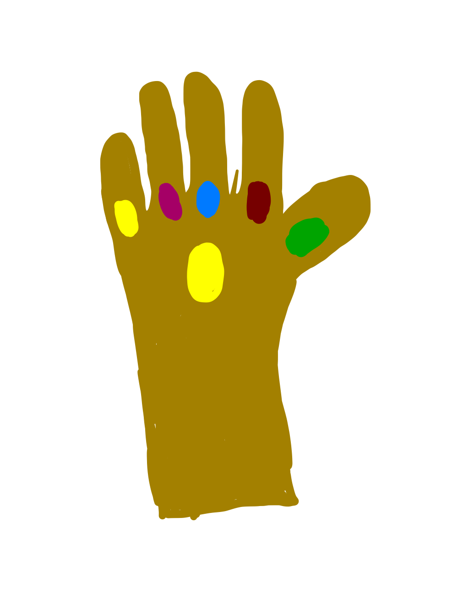

Avengers Infinity War was released in 2018. Avengers Infinity War was the most succesful and arguably the most entertaining Marvel Movie ever at the time. Infinity War was the fourth-highest-grossing film of all time worldwide grossing over $2 billion.
Avengers is a group of the best Marvel suoerheros assembled to take down the worst villians. The first Avengers movie was released in 2012 followed by four more including Infinity War. Avengers is the most widely known part of Marvel and all the Avengers movies are the most popular. Below is a table of all the Avengers Movies.
| Avenger Movie | Box Office |
|---|---|
| The Avengers | $1.5 Billion |
| Avengers Age of Ultron | $1.4 Billion |
| Avengers Civil War | $1.1 Billion |
| Avengers Infinity War | $2 Billion |
| Avengers Endgame | $2.8 Billion |
After this movie fans were shocked. The villian had won and half the Avengers were turned to dust. However, this movie paved the way for the very last Avengers movie: Avengers Endgame. Endgame recieved massive hype and build up thanks to Infinity War. Endgame grossed $2.8 Billion making it the most popular Marvel movie by far. Endgame was were Thanos was finally destroyed and universe was restored. Endgame was the end of the avengers movies and signified the end if an era for Marvel movies as they turned toward new plot points.